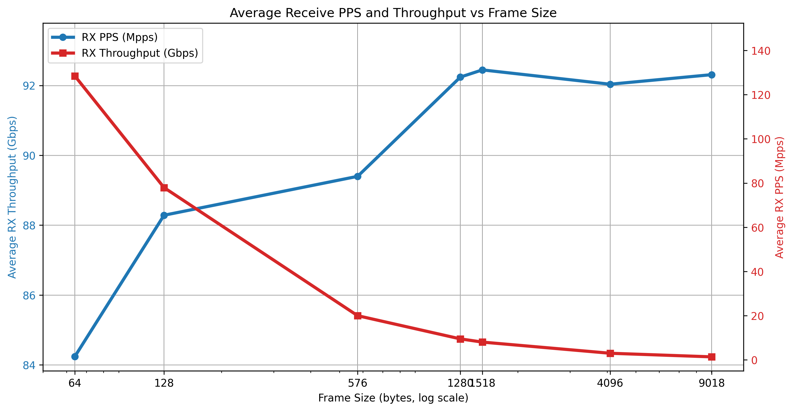

2025 Linux IPsec pCPU testing, (Madrid 20 - 26 July)
The testing started as part of IETF 123 Hackathon and continued since then.
Test setup
The initial test setup have four hosts or servers. Here, west and east function as IPsec gateways, also known as black servers. Meanwhile, sunseti and sunrise act as traffic generators or receivers, referred to as red servers.
| sunset |-----| west |====| east |----| sunrise |
Figure: Initial topology
Test hosts specification : 4 hosts
- Supermicro H13SSW Motherboard
- AMD EPYC 9135 16-Core Processor (a.k.a. Bergamo, or Zen 5)
- NIC: Mellanox MT28800 ConnectX-5 Ex (100Gbps NIc)
- NIC: Broadcom BCM57508 NetXtreme-E (only on sunrise, 100Gbps NIc)
Test Results
TREX pCPU UDP Results (2025-07-28)
In this test, west and east are IPsec gateways, and sunset is running TRex traffic generator. It sends on one port while receiving the traffic on the second port, on the same host.
 Figure: UDP performance with pCPU (2025-07-28)
Figure: UDP performance with pCPU (2025-07-28)
Each flow is 3.3Gbps. The TRex on sunset sends the traffic to west, which is an IPsec gateway that encrypts the traffic and forwards it to the second IPsec gateway, east. East decrypts the IPsec and sends it back to sunset. Sunset receives it on the second interface. The results clearly show total IPsec throughput increases linearly with the number of flows. Each flow is pinned to each CPU. Adding CPU increases the IPsec throughput as expected in RFC9611.
+-<<<---| sunset |-------+ | | +--| west |====| east |--+
Figure: TRex IPsec test topology
TREX Loop Test Results (2025-08-15)
This test uses a loopback (also called cross-connect) setup with only one host, sunset. It checks how fast the TRex traffic generator can send and receive data without involving Linux packet forwarding. The results show the maximum speed you can expect before adding IPsec gateways.
 Figure: Loop test results (2025-08-15)
+--<<<---| sunset |-------+ | | +-------------------------+
Figure: TRex loopback test topology
Future work: Linux contention analysis
We use the Linux profiling tool perf to identify contention points. The following examples from IPsec sender.
xfrm_state_find() contention.
{kind=link}
When using pCPU i.e. multiple CPU looking up state, even with states cached on policy there is CPU contention. You can see this in perf output as well as in Flamegrah clearly.
This is a known limitation of the Linux XFRM (IPsec) implementation. We hope to resolve this issue and hope to fix the contention in a future update.
 Figure: Falmegraph xfrm_state_find
Figure: Falmegraph xfrm_state_find
The function xfrm_state_find(). For more details on Flamegraphs, refer to Brendan Gregg's page. Is called on each sending cpu on
_raw_spin_lock_bh() contention.
{kind=link}
This contention appears on sending side and _raw_spin_lock_bh() called in transmit path.
Example of perf commandline.
This records perf counters on CPU 1, which we identified as sending CPU on west.
perf record -b -e cycles,L1-dcache-load-misses,L1-icache-load-misses:k -g -C 5 --call-graph dwarf perf report -g
Scripts to Tune the System
-
set-irq-affinity.sh This script optimizes packet processing by preventing
skb_freefrom being handled by a different CPU when using a Mellanox ConnectX NIC. By configuring RSS (Receive Side Scaling), it ensures that the same CPU manages both packet processing and freeing, particularly enhancing performance when pCPU affinity is enabled, and multiple CPUs are in use. Execute this script on each network interface, for red and black interface. -
Flow pinning on black interface Use this script to pin ESP-in-UDP traffic flows across different CPUs on a Linux system, based on UDP soruce port.. Run this script on the IPsec gateway ,east and west, black NICs.
-
Flow pinning on red interface This script is intended to distribute red traffic across several CPUs, allowing efficient pCPU utilization for sending. It should be run on the IPsec gateway, specifically on the west in your scenario. For bi-directional traffic, execute this on both IPsec gateways for the black interface.
For future work
Ensure CPUs used for networking, IPsec data path, are isolated from general-purpose tasks (isolcpus kernel boot option). - Use high-resolution network and CPU measurements (nstat, mpstat -P ALL 1, etc.). Monitor for dropped packets and IRQ balancing using ethtool -S and irqbalance status.
check if Ethernet is pausing.
ethtool --include-statistics -a black Pause parameters for black: Autonegotiate: off RX: on TX: on Statistics: tx_pause_frames: 0 rx_pause_frames: 10542401